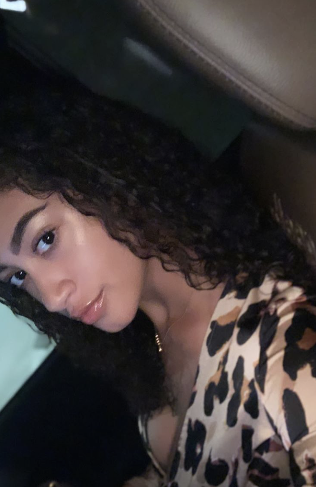

My goal is to obtain a part-time position that will support my objective on becoming a computer science specialist. Specifically looking for employment opportunities that will allow me to conduct research alongside a mentor, enhance my computers skills and allows creative and design freedom as I learn the business.
I am a highly motivated person, very organized and a quick learner.
MY HOBBIES
I have always enjoyed playing with computers. Building websites has always been something I am interested in. My hobbies include building websites and learning more computer skills.
WORK EXPIERENCE
Office Assistant- Autism Spectrum Assessment Clinic -- September to Present
Department of Psychology, University of Miami, (part-time)
Coral Gables, Florida
Prepare letters, maintain appointments and calendars of managers, schedule appointments, work with parents and managers to ensure clear communication between the office and patients. Work as liaison to reassure, ease and smooth out any misunderstandings or anxieties when problems arise. Organize client files, answer business phones and assist with anything the manager may need.
Office Assistant -- June 2014 to July 2018
American Cabling Company (ACC), 551 Commerce Drive
Upper Marlboro, Maryland
Assisted with the editing of the company website, organized client files and answered business phones,
assisted with interviewing and hiring IT professionals for upcoming projects.
Conducted background checks, phone screens, sat with director as he conducted in-person interviews with potential candidates. Created personnel folders for potential new hires, verified citizenship by using I9 and E-Verify, recorded interview notes,
conducted initial screening on resumes to see if candidates were a good fit for the projects. Worked on blueprints for upcoming projects to identify areas that estimators would need to work on, and created spreadsheets that counted the number of locations. Prepared draft calculations for overall cost for the projects.
Set up Drug Test screening for all new hires and prepared fingerprint applications for National Security background checks, for the Virginia Department of Justice for ACC employees contracted in the state of Virginia. Prepared Certified Payroll Reports and reports for the Apprenticeship Program in the state Maryland.
Assistant Seller -- July 11th to 13th 2017
Premier Prints, (part-time summer)
Baltimore, Maryland
Sold merchandise to various convention attendees from mega church functions, gun shows, fortune 500 companies, pharmaceuticals companies and several more. Dealt with many different types of personalities and attitudes and learned how to handle unhappy and rude customers as well as enjoy the ease of working with outstanding customers. Skilled at working at a fast pace while still pleasing the customers. During down periods, organized booths knowing that merchandise items would be located easily and efficiently once booth became busy again.
Below are the links to each of these jobs:
Premier Prints
Autism Spectrum Assessment Clinic
American Cabling Company
My States
Maryland and Florida
All my life, I lived in Marlyand. I went to the Calverton school for 6 years and made my way to Miami for college. Miami opened me to a new world that I fell in love with. There are so many oppurtunities in both places I live, given that I am only twenty minutes from D.C. in my hometown and Miami is full of significant people.
My Family
Cynthia, Timothy and Victoria
The three people listed above are my family members. They are my world and I would not be who I am today without them.
My Favorite Activities
Cooking, Playing with computers, Shopping and Family
Cooking has always been my favorite activity. When i was younger, me and my dad used to build robots together and he would show me cool things with the computer. As I grew older, school took up much of my time. Now that I am in college, I show him new tricks that I have learned with computers. Shopping has always been very therapuetic for me and spending time with family is always fun.
My Life
School and Work
I am a student at the University of Miami. My major is computer science and my minor is Interactive media. I currently work at the Autism Spectrum Assessment Clinic.
My Dream
Own my own Business
My dream is to own my own business one day. I want to intergret my interests with fashion and the beauty worl with my skills in technology. I am still thinking about what I want to do with it.

SKILLS
People person
Always on time
Expierenced in retail,food service and marketing, and office duties.